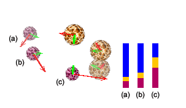
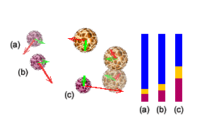

 
Compare the two diagrams above. Both show the same three snapshots of the two-particle system and show the potential and kinetic energies at these instants. Observe that in the diagram on the right the potential energies are greater by a constant amount than in the diagram on the left. This additional constant can be chosen arbitrarily. There is no such freedom in the definition of kinetic energies. The kinetic energies at a given instant are the same in the two diagrams.
Observe that the total mechanical energy E in the diagram on the left and E' in the diagram on the right are the same at the three instants, illustrating energy conservation. E' is greater than E by the same amount by which the potential energies are greater on the right than on the left.
The freedom to add a constant to the potential energy (and to the total energy) makes it possible to set the potential energy equal to zero at a convenient point. This will be done on the next page when calculating the gravitational potential energy of a ball near the earth's surface.